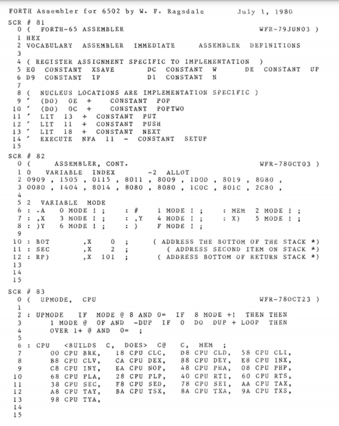
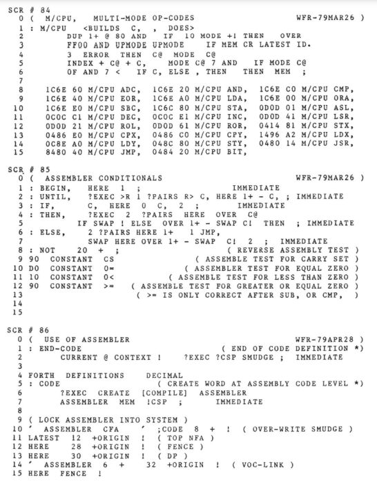

Infixing FORTH
══════════════
══════════
══════
══
January 25, 2025
Forth & DSLs
════════════
Forth excels at Domain Specific Languages
→ Build a mini-language to fit the problem
Examples:
• Assemblers
• Graphics
• 3D Modeling
• User Interfaces
• Structures + Objects
• Database Schemas
@6502a.png

@6502b.png

What about Infix Math?
══════════════════════
Why don't we see infix algebraic expressions?
• Can Forth's superpower work for this?
• Is it a good idea?
• Would it be composable?
Forth-y DSLs
════════════
• Balance ease of use agaist ease of implementation
• Usually limited or no error checking
• Typically involve an RPN-like syntax
- RED LED ON
- LEFT MOTOR OFF
• Composition often arises naturally
- But often relies on "carnal knowledge"
Attempt #1
══════════
• Support infix math with ONLY one word to the right
• Also support parentheses, but only ONE layer
• Rely on {} local variables
variable pending
variable scarfing
: scarf 1 scarfing !
bl parse evaluate
pending @ if 0 pending ! [char] ) parse evaluate then
0 scarfing ! ;
: enact ( xt -- ) state @ if , else execute then ;
: ( 1 pending ! scarfing @ 0= if scarf then ; immediate
: + scarf ['] + enact ; immediate
: - scarf ['] - enact ; immediate
: * scarf ['] * enact ; immediate
: / scarf ['] / enact ; immediate
2 + 3 + 4 .
→ 9 ok
2 + ( 3 * 4 ) .
→ 14 ok
: square { x } x * x ;
: pyth { a b } ( a square ) + ( b square ) ;
3 4 pyth .
→ 25 ok
2 + 3 * 4 .
→ 24 ok
Attempt #2
══════════
• Use an actual grammar
• Can we make it expandable?
• Rely on {} local variables
Backus–Naur Form
════════════════
• Notation for a Context-Free grammar
• Set of rules that map a non-terminal
to a mix of terminal and non-terminals
• Or | conjunction to allow alternatives
――――――――――――――――――――――――――――――――――――――――――――――――――――――
<full-name> ::= <first-name> <middle-name> <last-name>
<expr> ::= <term> | <expr><addop><term>
<integer> ::= <digit> | <integer><digit>
0 \ BNF Parser (c) 1988 B. J. Rodriguez
1 0 VARIABLE SUCCESS
2 : <BNF SUCCESS @ IF R> IN @ >R DP @ >R >R
3 ELSE R> DROP THEN ;
4 : BNF> SUCCESS @ IF R> R> R> 2DROP >R
5 ELSE R> R> DP ! R> IN ! >R THEN ;
6 : | SUCCESS @ IF R> R> R> 2DROP DROP
7 ELSE R> R> R> 2DUP >R >R IN ! DP ! 1 SUCCESS ! >R THEN ;
8 : BNF: [COMPILE] : SMUDGE COMPILE <BNF ; IMMEDIATE
9 : ;BNF COMPILE BNF> SMUDGE [COMPILE] ; ; IMMEDIATE
10
11 : @TOKEN ( - n) IN @ TIB @ + C@ ;
12 : +TOKEN ( f) IF 1 IN +! THEN ;
13 : =TOKEN ( n) SUCCESS @ IF @TOKEN = DUP SUCCESS ! +TOKEN
14 ELSE DROP THEN ;
15 : TOKEN ( n) <BUILDS C, DOES> ( a) C@ =TOKEN ;
――――――――――――――――――――――――――――――――――――――――――――――
https://www.forth.org/literature/bnfparse.html
0 \ BNF Parser Example #1 - pattern recog. 18 9 88 bjr 19:41
1 \ from Aho & Ullman, Principles of Compiler Design, p.137
2 \ this grammar recognizes strings having balanced parentheses
3
4 HEX 28 TOKEN '(' 29 TOKEN ')' 0 TOKEN <EOL>
5
6 BNF: <CHAR> @TOKEN DUP 2A 7F WITHIN SWAP 1 27 WITHIN OR
7 DUP SUCCESS ! +TOKEN ;BNF
8
9 BNF: <S> '(' <S> ')' <S> | <CHAR> <S> | ;BNF
10
11 : PARSE 1 SUCCESS ! <S> <EOL>
12 CR SUCCESS @ IF ." Successful " ELSE ." Failed " THEN ;
13
14
15
――――――――――――――――――――――――――――――――――――――――――――――
https://www.forth.org/literature/bnfparse.html
The Target
――――――――――
def square { x } {
x * x
}
def pyth { a b } {
(a square) + (b square)
}
3 4 pyth
→ 25 ok
Grammar Format
――――――――――――――
kind <FOO>
{{ list of terminals / non-terminals / actions ... }}
{{ alternate.. }}
' <BAR> :{{ out of order rule... }}
: kind ( "name" -- )
create 0 ,
does> @ begin dup while
state @ >r here >r >in @ >r
dup >r @ catch 0= if rdrop rdrop rdrop rdrop exit then
r> cell+ @
r> >in ! r> here - allot r> state !
repeat
-1 throw ;
: :{{ >body :noname ;
: {{ latestxt :{{ ;
: }} postpone ; here >r , dup @ , r> swap ! ; immediate
: @token ( -- ch ) >in @ tib + c@ ;
: +token 1 >in +! ;
: =token ( ch -- ) @token <> throw +token ;
: within ( ch a b ) >r over <= swap r> <= and ;
: []token ( a b -- ch ) @token -rot within 0= throw @token +token ;
: t' postpone [char] postpone =token ; immediate
: stoken ( a n -- ) 0 ?do dup c@ =token 1+ loop drop ;
: t" postpone s" postpone stoken ; immediate
What Grammar to Use?
════════════════════
• Crib from Pascal expressions
• Call Forth code in []s
: space? ( ch -- f )
dup bl = over nl = or over 10 = or swap 9 = or ;
kind <SPACE>
{{ }}
{{ @token space? 0= throw +token <SPACE> }}
: st' postpone <SPACE> postpone t' postpone <SPACE> ; immediate
: st" postpone <SPACE> postpone t" postpone <SPACE> ; immediate
kind <DIGIT>
{{ [char] 0 [char] 9 []token [char] 0 - }}
: letnum? ( ch -- f )
dup [char] 0 [char] 9 within
over [char] A [char] Z within or
over [char] a [char] z within or
swap [char] _ = or ;
kind <IDENTIFIER>
{{ >in @ tib + 0 begin @token letnum? while 1+ +token repeat dup 0= throw }}
kind <NUMBER'>
{{ <DIGIT> 1 }}
{{ <DIGIT> <NUMBER'> rot over 0 do 10 * loop -rot 1+ >r + r> }}
kind <NUMBER>
{{ <NUMBER'> drop aliteral }}
kind <FORTH>
{{ [char] ] parse evaluate }}
kind <EXPRESSION'>
kind <IDENTIFIERS>
{{ }}
{{ <SPACE> <IDENTIFIER> <SPACE> evaluate <IDENTIFIERS> }}
kind <FACTOR>
{{ <SPACE> <IDENTIFIER> <SPACE> evaluate <IDENTIFIERS> }}
{{ <SPACE> <NUMBER> <SPACE> }}
{{ st' ( <EXPRESSION'> st' ) }}
{{ st' [ <FORTH> }}
kind <TERM>
{{ <FACTOR> }}
{{ <FACTOR> st' * <TERM> postpone * }}
{{ <FACTOR> st' / <TERM> postpone / }}
{{ <FACTOR> st" mod" <TERM> postpone mod }}
{{ <FACTOR> st" and" <TERM> postpone and }}
kind <SIMPLE-EXPRESSION>
{{ <TERM> }}
{{ <TERM> st' + <SIMPLE-EXPRESSION> postpone + }}
{{ <TERM> st' - <SIMPLE-EXPRESSION> postpone - }}
{{ <TERM> st" or" <SIMPLE-EXPRESSION> postpone or }}
{{ st' + <SIMPLE-EXPRESSION> }}
{{ st' - <SIMPLE-EXPRESSION> postpone negate }}
kind <EXPRESSION>
{{ <SIMPLE-EXPRESSION> }}
{{ <SIMPLE-EXPRESSION> st' = <EXPRESSION> postpone = }}
{{ <SIMPLE-EXPRESSION> st" <>" <EXPRESSION> postpone <> }}
{{ <SIMPLE-EXPRESSION> st' < <EXPRESSION> postpone < }}
{{ <SIMPLE-EXPRESSION> st" <=" <EXPRESSION> postpone <= }}
{{ <SIMPLE-EXPRESSION> st" >=" <EXPRESSION> postpone >= }}
{{ <SIMPLE-EXPRESSION> st' > <EXPRESSION> postpone > }}
' <EXPRESSION'> :{{ <EXPRESSION> }}
kind <STATEMENTS>
{{ <EXPRESSION> <STATEMENTS> }}
{{ st' } }}
kind def
{{ : st' { postpone { st' { <STATEMENTS> postpone ; }}
kind on
{{ ' :{{ st' { <STATEMENTS> postpone }} }}
kind expr
{{ :noname <EXPRESSION> postpone ; execute }}
on <TERM> {
[ <FACTOR> st' ^ <TERM> postpone xor ]
}
expr 1 ^ 2 ^ 4
→ 7 ok
Assessment
══════════
• Unconstrained BNF parsing is potentially slow
• Error cases fail hard
• Multiline fails due to REFILL, except in source
• Probably rationalizable with effort
Left Elimination?
═════════════════
• Make a larger grammar that doesn't need to backtrack
A → Aα | β
⇒
A → βA'
A' → αA' | ε
E → E + T | T
T → T * F | F
F → ( E ) | id
⇒
E → TE'
E' → +TE' | ε
T → FT'
T' → *FT' | ε
F → (E) | id
Is it Forthy? Is it ~Good~?
═══════════════════════════
• You can add new words AND grammar
• Root implementation is fairly simple
• Backtracking behavior is weird
- Reducing to LL(1) makes it messy
• The stack still, peeks through
• It would allow more English DSLs
• Needs a better way to deal with errors
Would it Help Adoption?
═══════════════════════
• It matches people expectations more
• But would be frustrating when it fails to
• The more it looks like C/C++/Java/...,
the more it will frustrate when it isn't
DEMO &
QUESTIONS❓
🙏
Thank you!